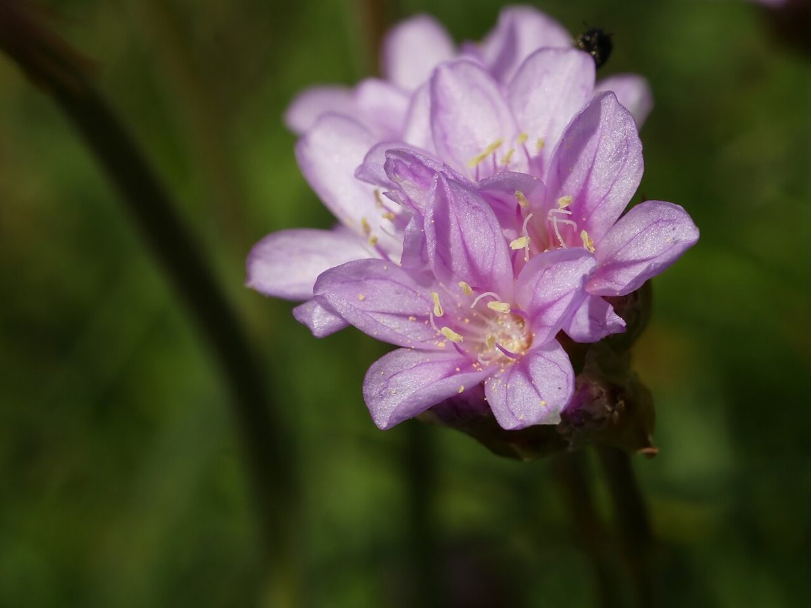

店のこと
店のこと
確認できているのは、所在地とInstagramのアカウントだけです。
「想像してみる」部分は、制作側が想像して書いたものです。お店の実際の様子・考え・商品とは関係ありません。
確認できていること
- 店名は「Armerie パンとお菓子アルメリア」、業種はベーカリー・焼き菓子
- 所在地は山口県宇部市新天町2丁目3-15(〒755-0029)
- 電話番号はなし。連絡はInstagramから
- 営業時間・定休日・メニュー・価格・ご予約・駐車場は準備中

想像してみる
名前から思い浮かべたこと
制作側は「アルメリア」という名前から、丸い花の姿を連想しました。花の写真(このページ上部とトップページの2枚)と、パンのイメージ写真を並べてみています。お店が花と関係しているかどうかは分かりません(制作側の連想です)。